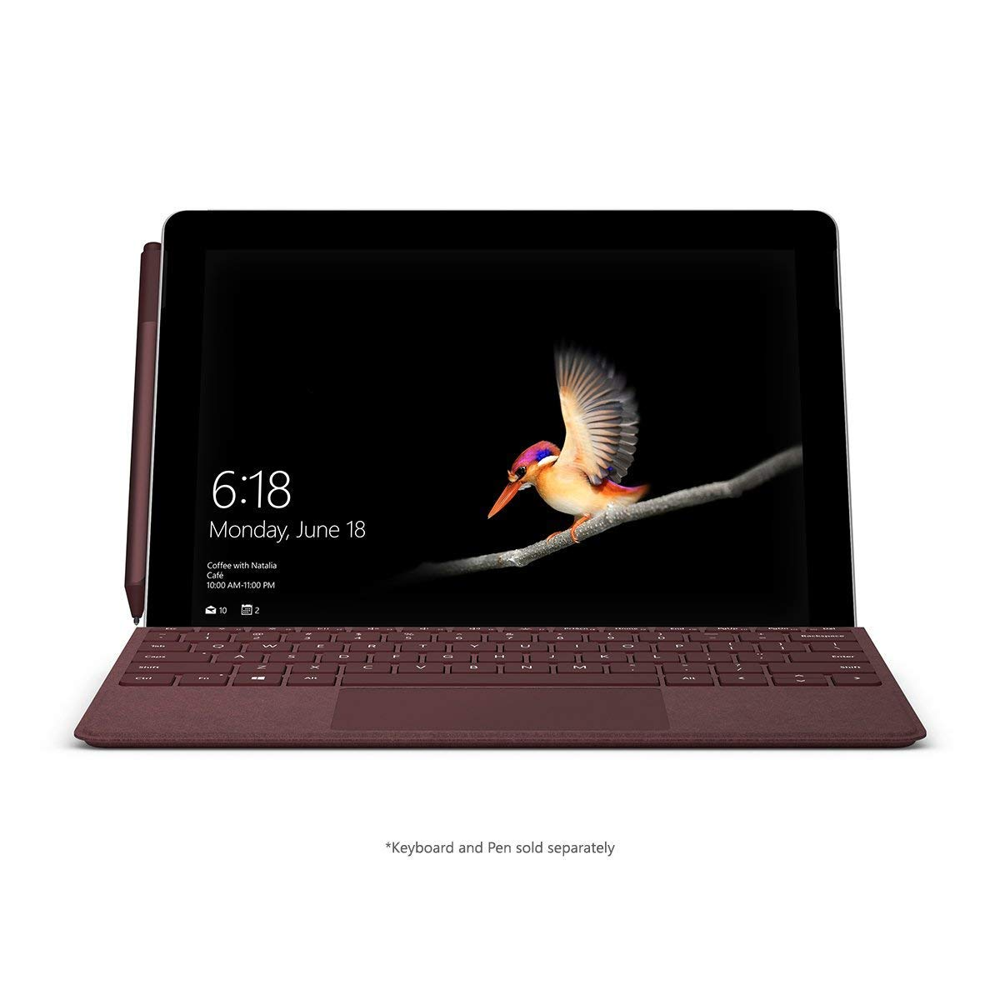
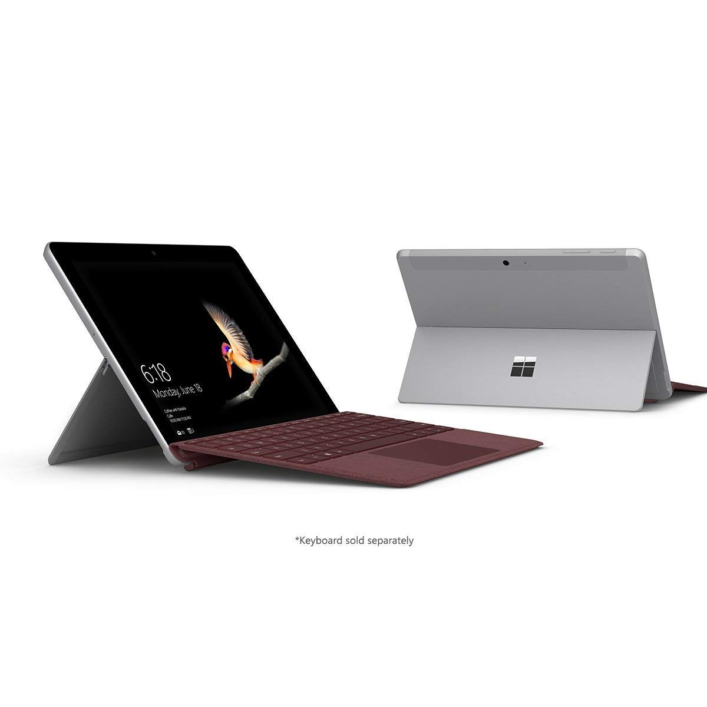
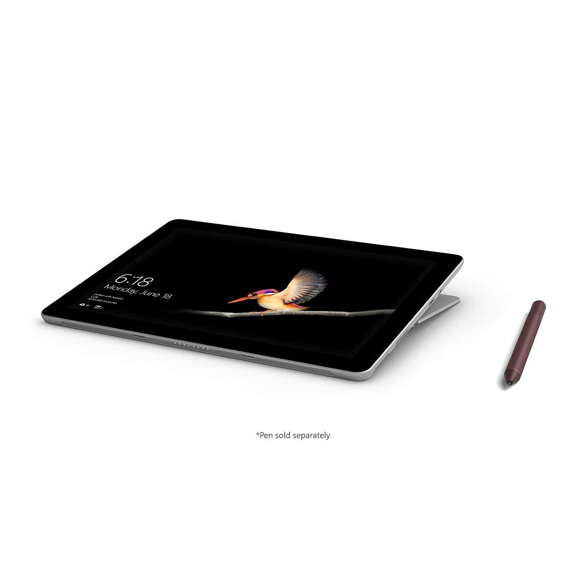
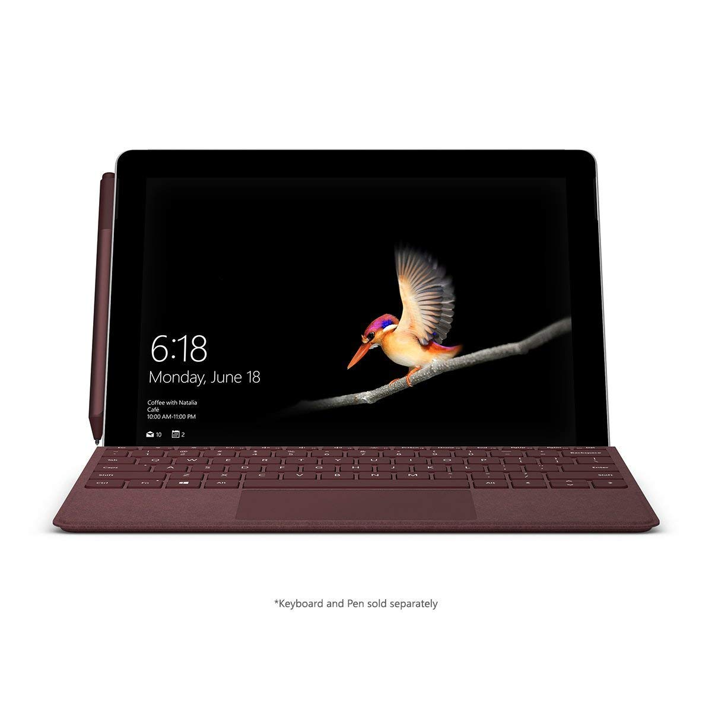
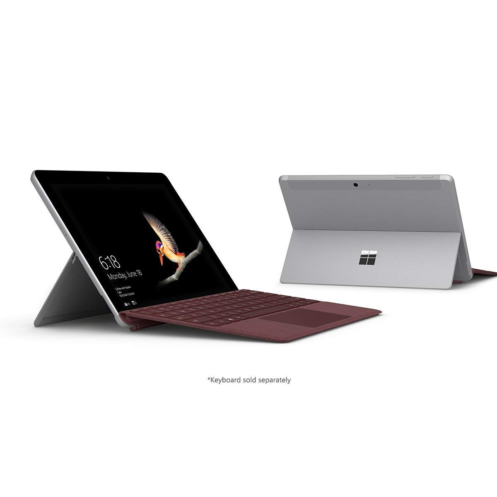
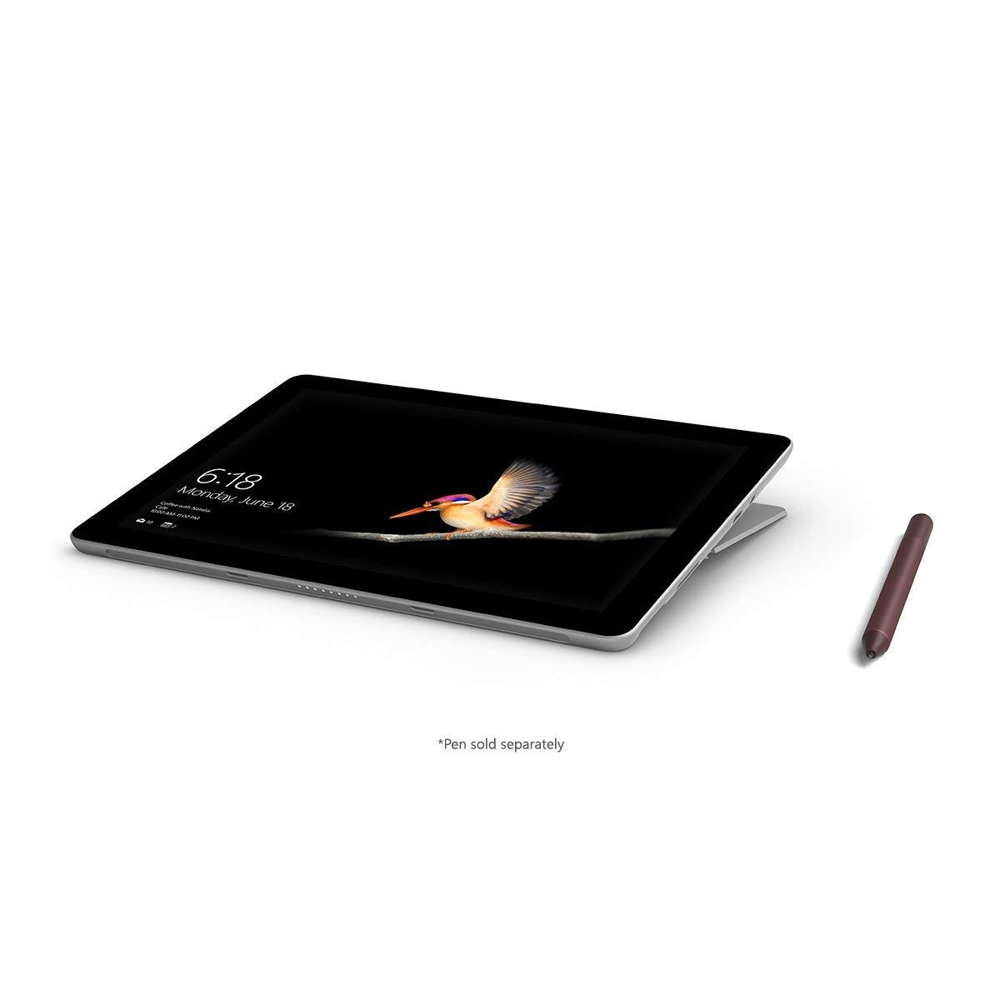

Accessories

Microsoft Surface Go
Technical Specs
Processor : Intel i3 / i5
OS : Windows 10
RAM : 8GB
Cores : 4/6
Storage
Internal : 64GB / 128GB / 256GB / 512GB
External : None
Battery : 7000Mah
Screen
Size : 10.2 inch
Brightness : 425 nits
Tru-tone : No
Resolution : 750 x 1334 pixels
Camera
Front : 7 MP
Back : 12 MP wide angle
Video : upto 4k 30fps
Buy Now
Price : $399
Amazon : Buy
Review
tThe Microsoft Surface Go is one of the few tablets based on Windows and has its perks because of it. Being a Surface lineup, the design is similar to other Surface products such as the Surface laptop. The Go is a simplistic yet good-looking tablet with adequate performance for day-to-day tasks. The keyboard attachment of this device makes it a fully-fledged ultrabook laptop. due to this, the Surface Go can be great alternative for students as a device for Note-taking and some media consumption too. The slim and light-weight design of the Go makes it a great option for on-the-go use, hence the name. All in all, the Surface Go is a good option for those looking for a Windows based Tablet. Check out the Microsoft Surface Go in the link below.
Amazon Link: View
Gallery
 




